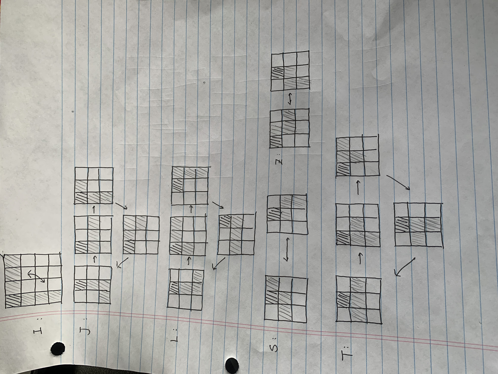

Overview
This project is ...
This project is ...
Here is a table of all necessary parts of this project:
| Part name | QTY | Image |
|---|---|---|
| Arduino UNO board | 1 |  |
| Adafruit 32 * 16 RGB LED Matrix | 1 |  |
| female DC power adapter(for LED Matrix) | 1 |  |
| 5V 200m power supply | 1 |  |
| Arduino joystick | 1 |  |
| passive buzzer | 1 | |
| push button | 1 |  |
| Jump wires (both male and female header) | 20+ |  |
Since there's more than one version of LED matrix avaliable. Those matrix pannel may have different version of connections. Please refer to this page for your specific pannel. For my case, here's a table of all my connections:
| Part Name | Part Pin | Arduino UNO Pin |
|---|---|---|
| joystick | VRx | A3 |
| joystick | VRy | A4 |
| passive buzzer | Postive leg | Pin 11 |
| push button | \ | Pin 12 |
| RGB matrix | R1, G1, B1 | Pin 2,3,4 |
| RGB matrix | R2, G2, B2 | Pin 5,6,7 |
| RGB matrix | Row Select A, B, C | A0, A1, A2 |
| RGB matrix | CLK | Pin 8 |
| RGB matrix | Output Enable | Pin 9 |
| RGB matrix | Latch/STB | Pin 10 |
All the other pins that are not mentioned here can be ignored. Notice that the pin connections of RGB matrix pannel can be quite tricky. Please refer to this page to double check your wiriting if your matrix pannel failed to work as expected.
The full circuit looks like this:
Here is the very first block diagram from the purposing day:
I started with RP2040 and use MAX7219 as the tetris playground. And build the first version of this project with the ability to create seven different blocks, and be able to move and rotate them as they fall from the top of the matrix.
The basic block rotate and block creation algorithm was also created back then
Later on, due to the restrictions of MAX7219, I swicthed to adafruit 32*16 LED RGB Pannel to have enough space for the game play. To access that many digital/analog pins, arduino UNO is used. Step after step, there's more than one version of the coding, and now the full code can perform the following function flawlessly:

The full demo video of the final design is shown as below:
Here's the link to the author's repo along with contact information:
Email: Xu1997David@gmail.com